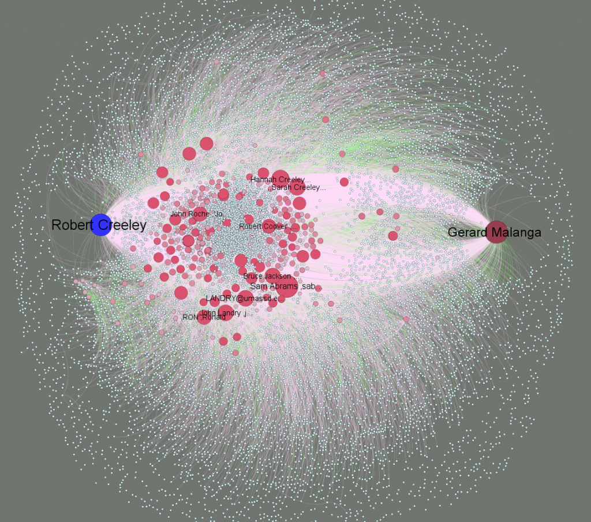

An early draft of poet Robert Creeley’s email correspondence network, emphasizing the connection between the poet and Gerard Malanga. The ~50,000 item correspondence is being processed by the AIMS Project here at Stanford, which focuses on developing methods for archiving born-digital content.


This approximation of Creeley's network has been simplified to filter out a variety of artifacts in the individual email attributes,
Tools such as Gephi provide archivists with a way to express the shape of very large collections to researchers who may be interested in exploring them in more detail than is possible with a network visualization such as this. For example, the subject matter of the emails themselves has not been analyzed and as such treats an incredibly important email filled with meaningful information as equal to the forwarding of a university public service announcement. While automated thematic analysis of subjects and content may provide a more expressive network, it still pales in comparison to a motivated scholar exploring the collection in a directed manner with a research agenda and an understanding of the socio-cultural environment in which the correspondence is being crafted.